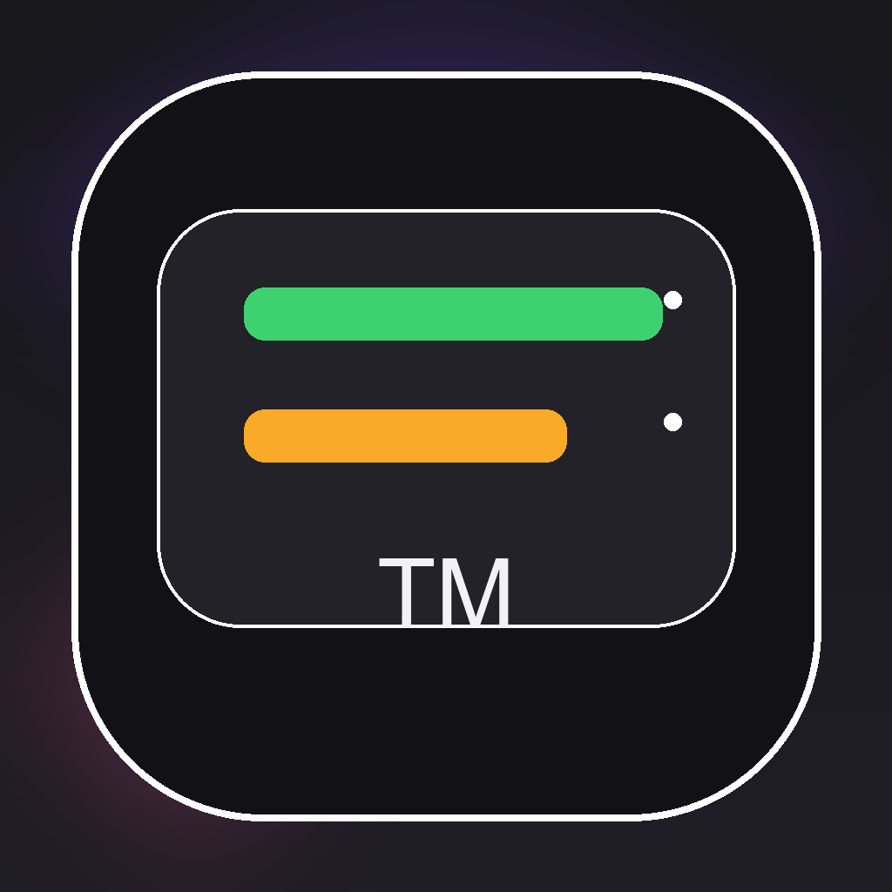
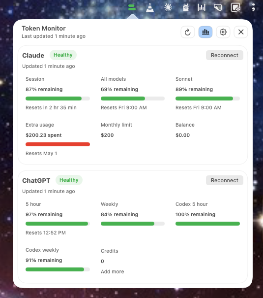
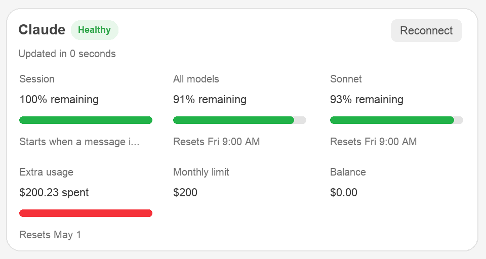
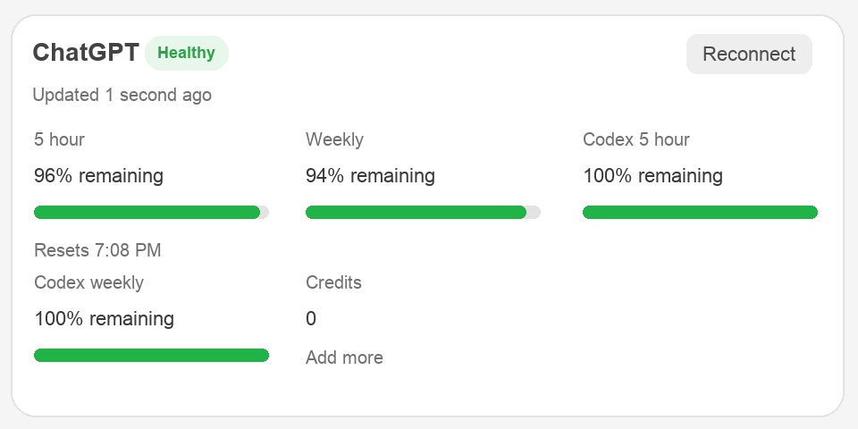
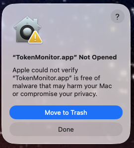
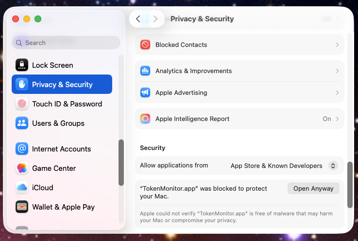
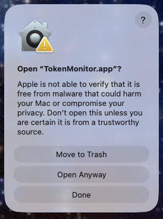
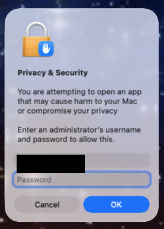

Step 01
Install the app
Download the DMG, open it, and drag Token Monitor onto Applications.

Token MonitorToken Monitor keeps Claude and ChatGPT usage visible in your macOS menu bar, with separate local sessions and source-native limits for each provider.
Install once from the DMG, then keep Token Monitor in the menu bar.



No build tools, no shared browser cookies.
Download the DMG, open it, and drag Token Monitor onto Applications.
Log in once for Claude and ChatGPT inside their isolated WebKit sessions.
Open the menu bar popover when you need the current provider-specific capacity.
Each provider keeps its own numbers and reset windows. Click images to inspect details.
A compact status board keeps Claude and ChatGPT side by side.
Session, model, Sonnet, extra usage, balance, and reset timing stay source-native.
Daily, weekly, Codex, and credits values stay visible without a browser tab hunt.
Token Monitor keeps the usage check close to your work without merging provider rules into a fake universal score.
No. Download the DMG, open it, and drag the app onto Applications.
No. Claude and ChatGPT use separate persistent WebKit sessions inside the app.
All screenshots are real Token Monitor views. Click any of them to open an enlarged preview.
Preview builds may show Apple's verification warning until Token Monitor is Developer ID signed and notarized. Only continue if you downloaded the DMG from this repository and trust that build.




Launch at login uses Apple's ServiceManagement API, which expects a code-signed app. Move TokenMonitor.app to Applications, open it once, then enable Launch at login in Token Monitor Settings. If macOS still asks for approval, open Login Items from Token Monitor Settings and allow it there.
https://github.com/MediaPublishing/token-monitor